Cloth simulation
Edward Song · CS 184/284A · Fall 2026
Overview
A square of fabric can fall as a single flat sheet, swing from two pins, or buckle into a pile. The simulator uses the same grid in each case. Springs carry tension through the grid, a position-based integrator advances it, and contact corrections keep nearby surfaces apart. The most striking difference in these experiments was the role of damping: changing it altered where the free edge was in its swing even when stiffness and gravity stayed fixed.
Part 1 · Masses and springs
Grid coordinates span both endpoints of the sheet. The horizontal scene starts at y = 1. Vertical sheets start in the xy plane with a small random z offset (±0.001) so they can buckle out of plane. After storing every mass in row-major order, the grid builder connects earlier neighbors and records the initial distance of each spring. Building in two passes keeps pointers into the mass array valid.
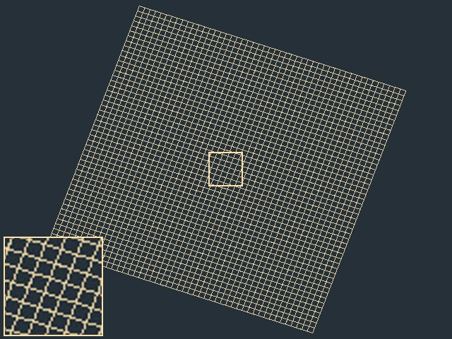
Structural and bending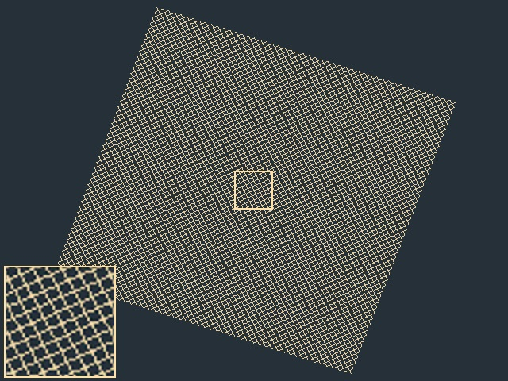
Shear only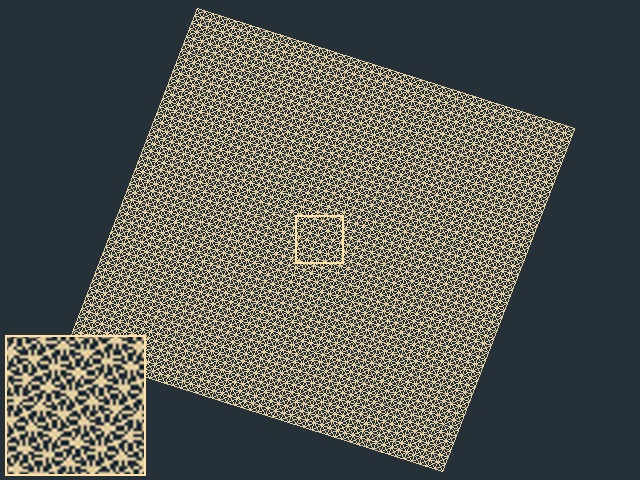
All three familiesPinned2, frame 0. The insets enlarge the same patch. The 4,900 structural links trace the grid axes. The 4,800 bending links span two intervals on those same axes, so they overlap in this view. The 4,802 shear links make the diagonal crosses. All 2,500 masses and the three spring counts were checked in the simulator.
Capture method
Each experiment loads a supplied scene through the C++ scene loader and advances Cloth::simulate at 90 frames/s with 30 substeps/frame. Figures are offscreen framebuffer captures using the exported simulation geometry and the project shader bodies on OpenGL ES. The desktop GLSL pairs were also compiled and linked separately. Camera and material settings stay fixed within each comparison.
Part 2 · Spring stiffness
Each substep resets the forces to mass times external acceleration. An enabled spring applies equal and opposite forces proportional to its extension. Bending uses one fifth of the selected stiffness. Verlet integration advances each free mass by its previous displacement times (1 − damping/100), plus acceleration times the squared substep duration. Pinned masses keep their positions.
After collision response, a spring longer than 110% of its rest length pulls its free endpoints together. Two free endpoints share the correction equally. A lone free endpoint takes the whole correction. This local pass limits extreme stretch during the swing.
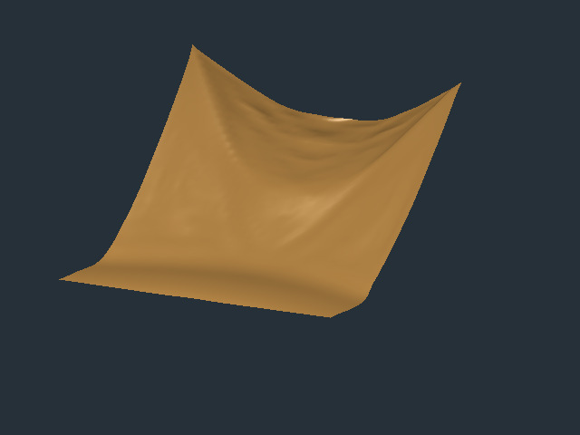
Stiffness 500 · frame 45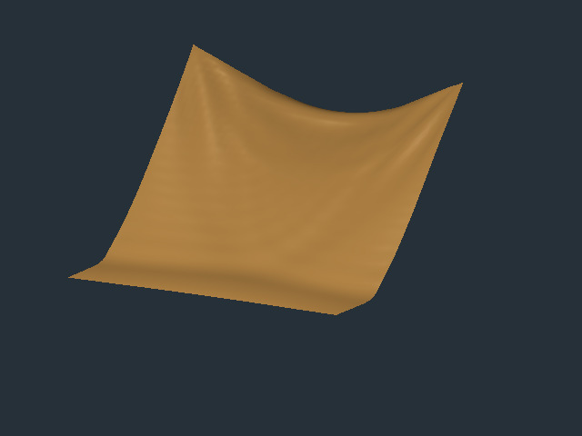
Stiffness 5,000 · frame 45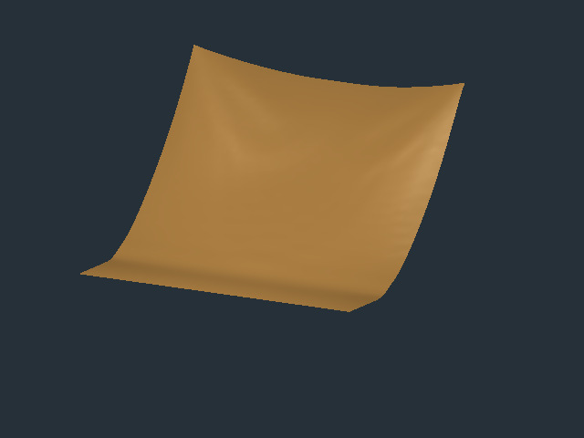
Stiffness 50,000 · frame 45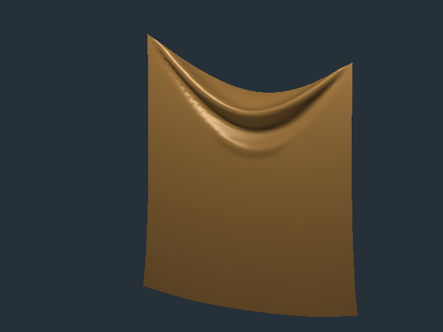
Stiffness 500 · frame 240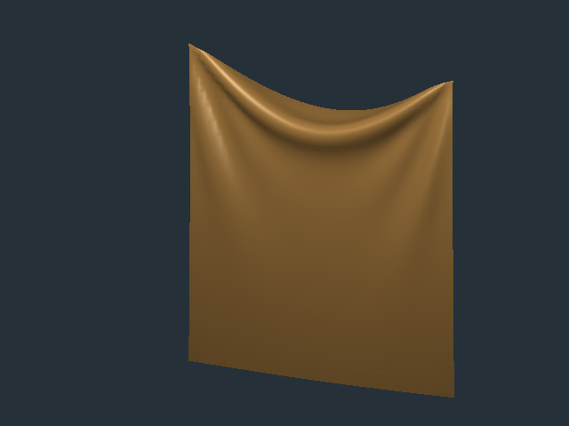
Stiffness 5,000 · frame 240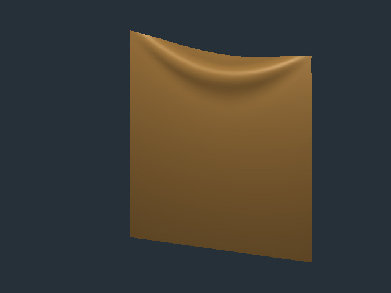
Stiffness 50,000 · frame 240At release every spring is at rest length, so all three free edges initially accelerate under gravity. At frame 45 the softer sheet still extends farther forward. By frame 240 its free-edge midpoint hangs at y = −0.142, compared with −0.083 at the baseline and −0.022 for the stiff sheet. The stiffer springs need less extension to carry the same weight.
Part 2 · Density and damping
Each row varies one input in pinned2. Density values below are the scene values in kg/m². The viewer shows one tenth of these values in g/cm². Defaults are density 150, stiffness 5,000 and damping 0.2%.
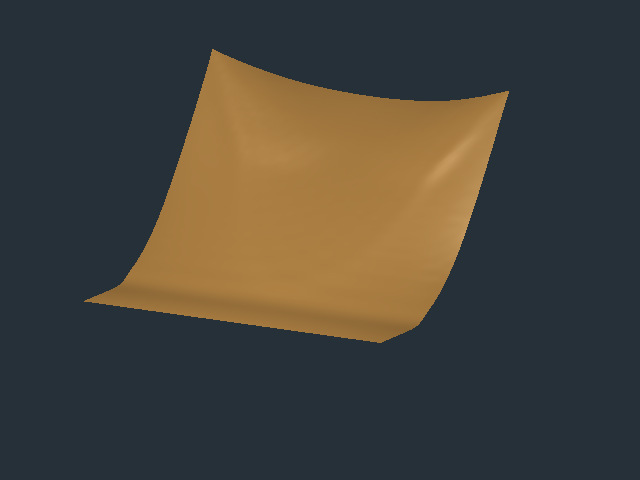
Density 30 · frame 45Density 150 · frame 45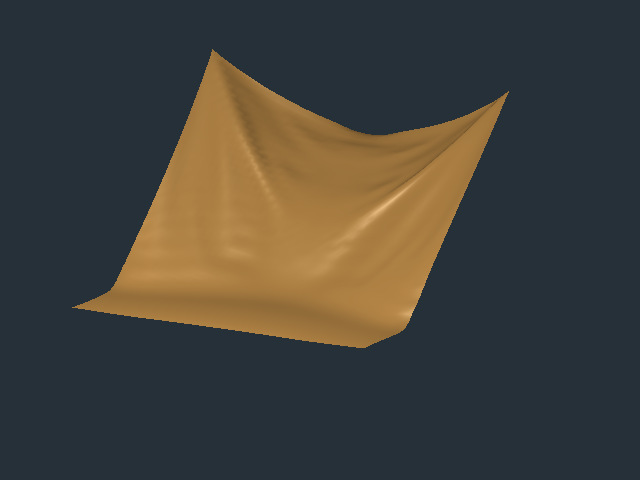
Density 450 · frame 45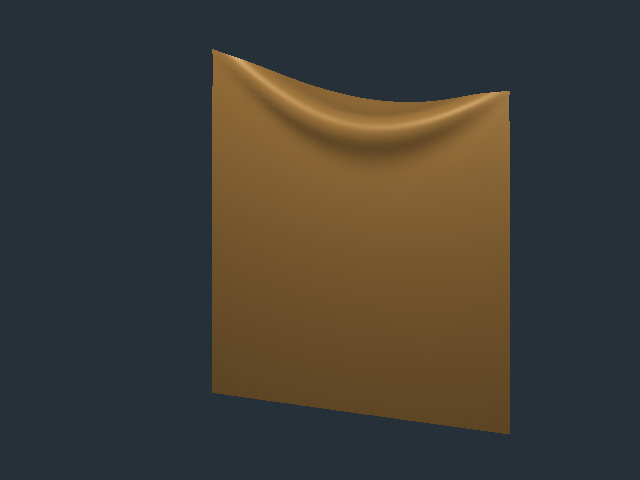
Density 30 · frame 240Density 150 · frame 240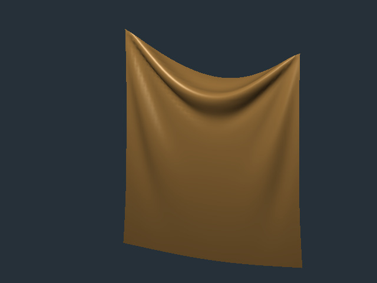
Density 450 · frame 240Gravity gives each free mass the same initial acceleration. Once the springs stretch, the same spring force produces less acceleration in a heavier mass. At frame 240, the free-edge midpoint lies at y = −0.035, −0.083 and −0.120 from lightest to heaviest.
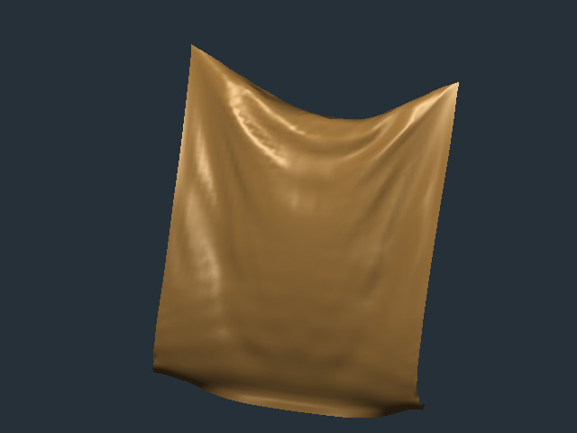
Damping 0.02% · frame 45Damping 0.2% · frame 45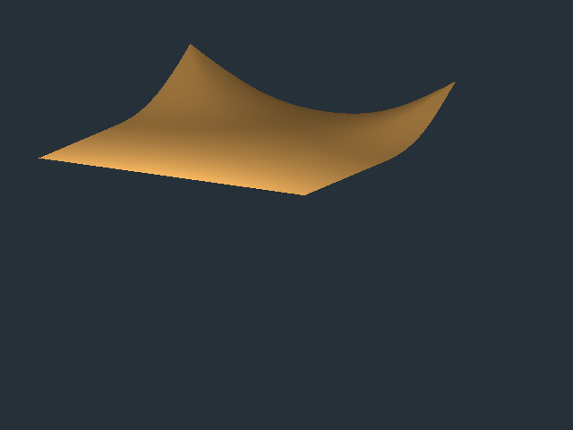
Damping 1% · frame 45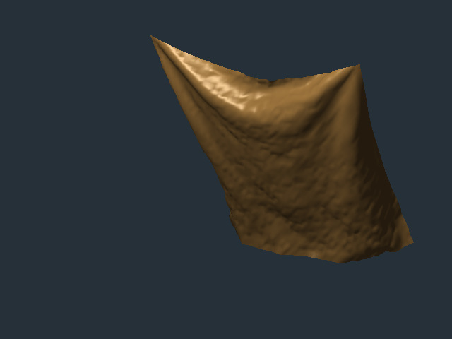
Damping 0.02% · frame 240Damping 0.2% · frame 240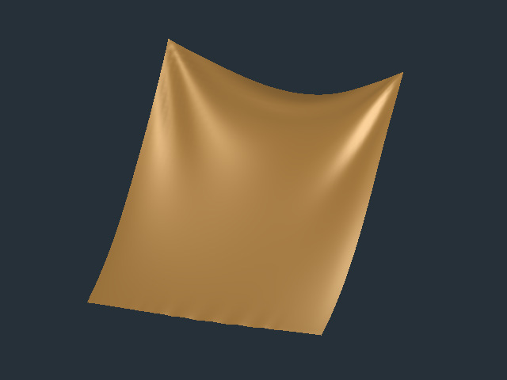
Damping 1% · frame 240At 0.02% the sheet swings past vertical and still has visible ripples at frame 240. At 1% it barely dips by frame 45, and its free edge is still 0.59 units forward of the pins at frame 240. Damping removes displacement on every substep, so even a small percentage change strongly affects the transient.
Part 2 · Four pinned corners
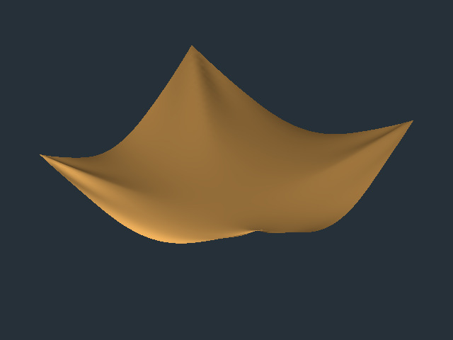
Pinned4 · frame 360 · default parametersWith four corners fixed at y = 1, the lowest mass settles at y = 0.736. The edge midpoints also sag because only their endpoints are pinned. Between frames 240 and 360 the minimum height agrees to three decimal places.
Part 3 · Contact with a plane
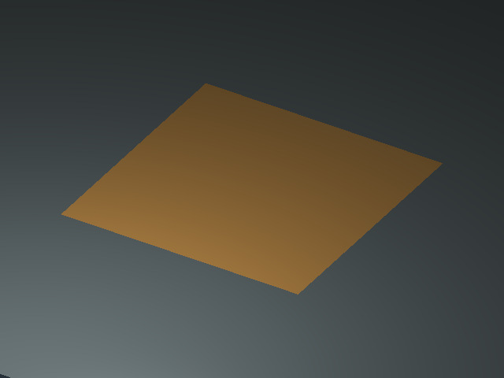
Plane · frame 120 · default parametersThe plane test compares signed distances before and after the step. A crossing projects the candidate position onto the plane and adds a small normal offset toward the side it came from. The solver applies a fraction (1 − friction) of the displacement from the previous position to this target. The horizontal drop settles flat, with the mass heights equal to within the capture precision.
Part 3 · Contact with a sphere
When a candidate mass lies inside the sphere, its radial direction identifies the nearest point on the surface. The algorithm applies the displacement from the last position toward this contact point, scaled by one minus the sphere friction. At the exact center the previous radial direction provides a fallback. The display sphere is slightly smaller than the collision sphere, as in the starter viewer.
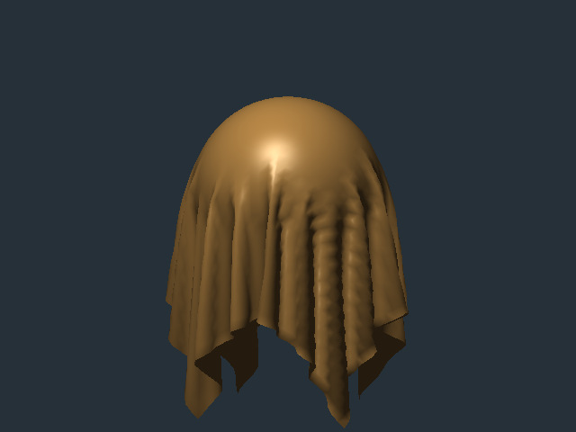
Stiffness 500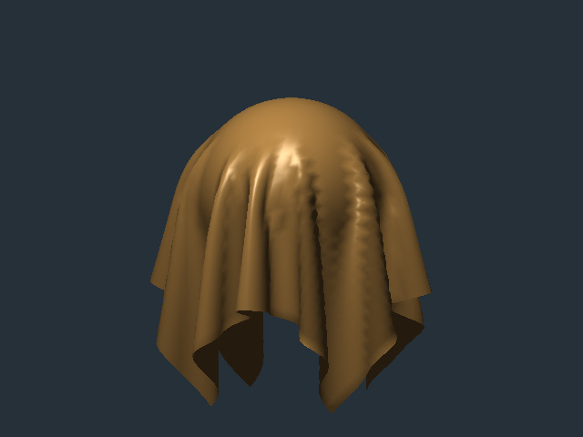
Stiffness 5,000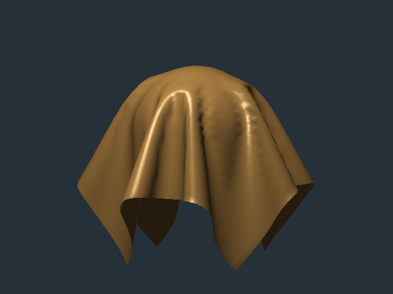
Stiffness 50,000Sphere scene at frame 360. The soft sheet clings to the sphere and forms narrow, deep pleats. The lowest mass reaches y = −0.261. At the default stiffness the folds stand farther out and the low point rises to −0.231. At 50,000 the hem spreads widest and reaches only −0.198. The three runs use the same collision radius, friction, density and damping.
Part 4 · A falling sheet
Testing every pair of 2,500 masses would require more than three million distance checks per substep. The solver groups masses by integer cell coordinates using a hash table. Each box spans three nominal grid spacings along x and y, and the larger spacing along z. Flooring each coordinate handles positions on either side of zero.
Within a bucket, a mass accumulates outward corrections for other masses closer than twice the cloth thickness. It moves by their average divided by the number of substeps. An exact overlap uses the initial separation direction. Restricting candidates to a single bucket is an approximation: a close pair across a cell boundary can be missed.
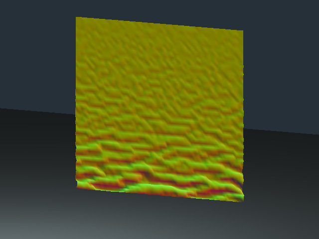
Frame 10 · first ripples at the floor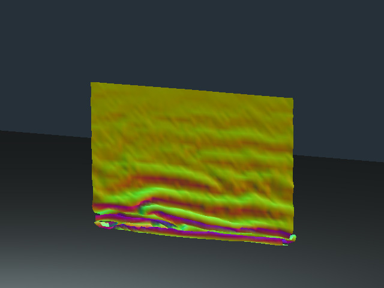
Frame 32 · lower edge buckles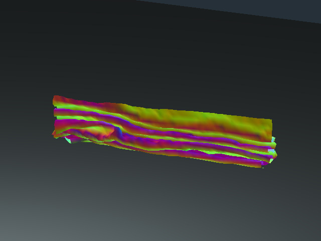
Frame 60 · layers accumulate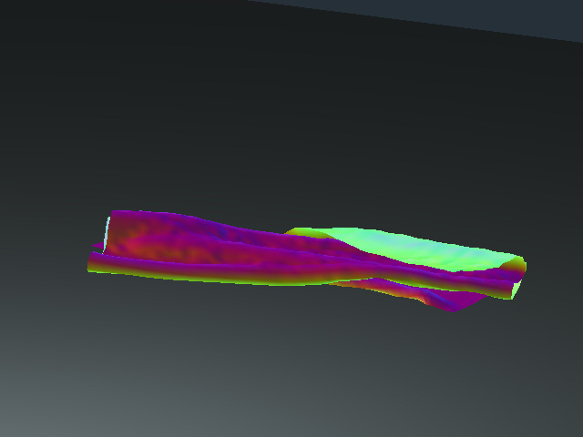
Frame 120 · low pileColors encode mesh normals, making the alternating directions of neighboring folds visible. The bottom row uses a closer view. With the default parameters the highest point drops from 0.95 at frame 10 to 0.086 at frame 120. Small adjustments continue as neighboring layers repel one another.
Part 4 · Fold comparisons
Each run begins with the same perturbed vertical grid. The captures use the same camera and frame, so the height of the remaining upright sheet can be compared directly.
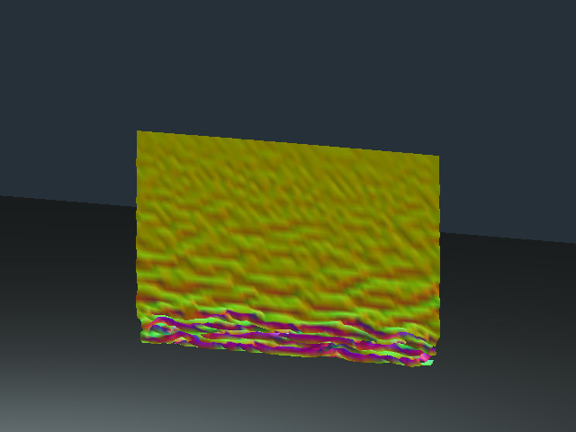
Stiffness 500 · density 150Stiffness 5,000 · density 150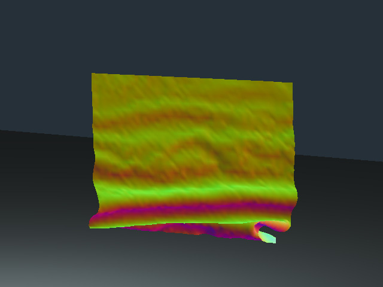
Stiffness 50,000 · density 150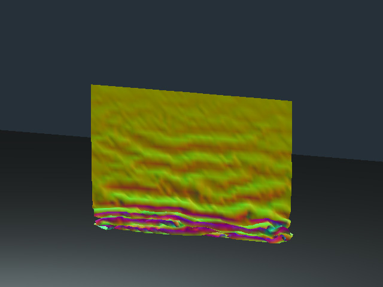
Stiffness 5,000 · density 450At frame 32 the soft sheet has already compressed to a height of 0.644, compared with 0.670 for the baseline. The stiff sheet reaches 0.739 and bows farther sideways at its base. Higher stiffness resists the rapid bending that forms a tight stack. Tripling the density with stiffness held fixed lowers the top to 0.655. Its added inertia lets the upper sheet push farther down into the folds.
Part 5 · Lighting
The vertex shader transforms the mesh into clip space and passes world positions, normals, tangents and texture coordinates to the rasterizer. The rasterizer interpolates them across each triangle. The fragment shader uses those interpolated values to compute a color for each visible sample.
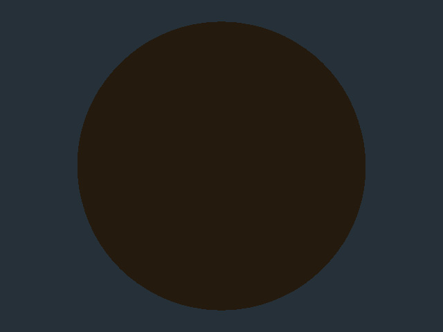
Ambient only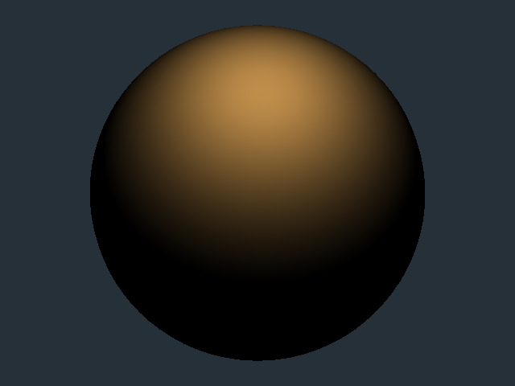
Diffuse only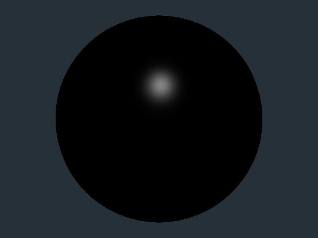
Specular only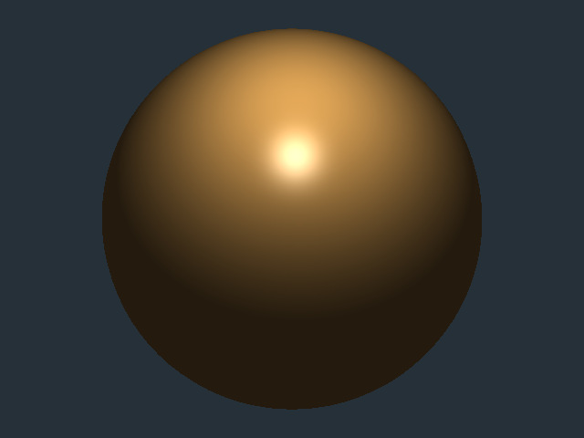
Full Blinn–PhongAmbient supplies a uniform material-colored floor. Diffuse scales the material color by the positive normal–light cosine and the point light’s inverse-square irradiance. Specular uses the angle between the normal and the halfway direction between light and camera. Raising that cosine to the 48th power concentrates energy in the small highlight. Adding the three terms preserves the shaded silhouette and places the highlight on the lit side.
Part 5 · Texture and surface relief
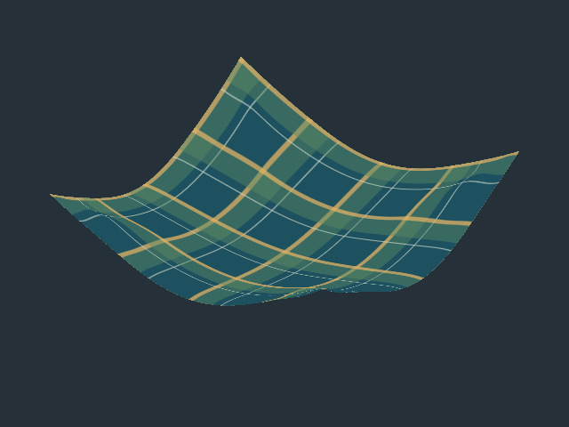
Original plaid · four-corner cloth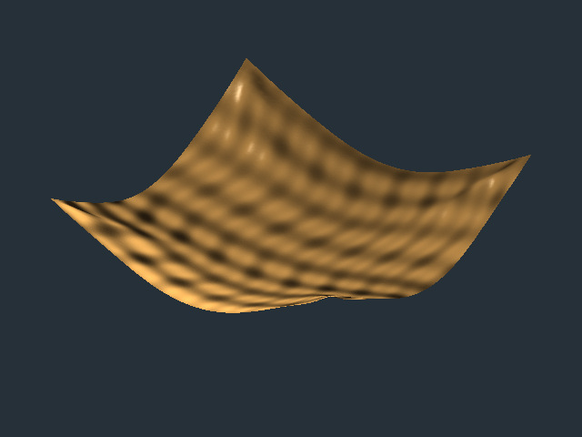
Ribbed height field · four-corner clothThe texture shader samples a repeating plaid designed from layered horizontal and vertical stripes. The compressed checks near the corners show how interpolated UV coordinates follow the cloth. For relief, a separate periodic grayscale map combines wavy ribs and a crossing sinusoid. One-texel forward differences measure its two slopes. These tilt the lighting normal in the local tangent frame.
Bump · 16 × 16 sphere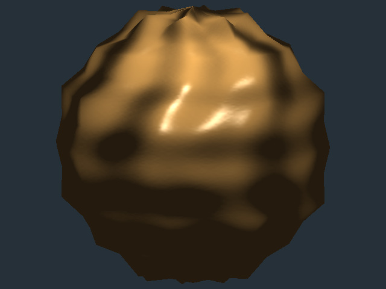
Displacement · 16 × 16 sphere
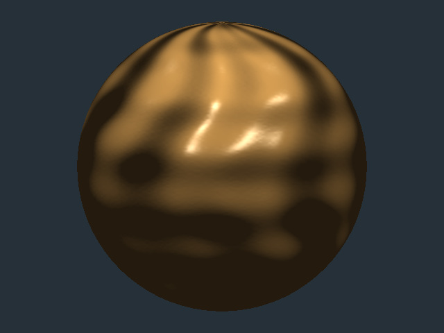
Bump · 128 × 128 sphere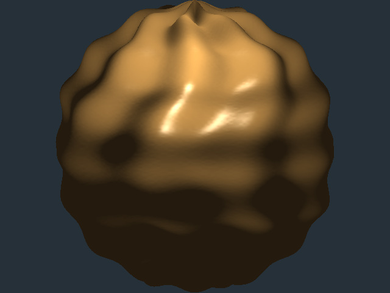
Displacement · 128 × 128 sphereAll relief images use the same non-default map and scale settings (height 0.16, normal 60). Bump mapping changes the highlight inside each triangle and leaves its boundary in place. Displacement also moves vertices along their normals by sampled height. The 16 × 16 sphere undersamples the ribs and has broad angular edges. At 128 × 128, displaced vertices trace the wavy outline. Increasing the bump mesh resolution mainly smooths the underlying sphere outline.
Part 5 · Reflection and custom material
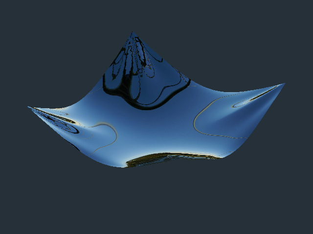
Mirror · four-corner cloth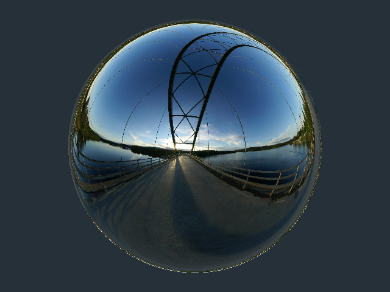
Mirror · sphereThe incident viewing ray reflects about the interpolated normal. Sampling the environment cubemap along that direction bends the horizon around the sphere. On the cloth, a single environment feature can cross several folds and change direction at each one.
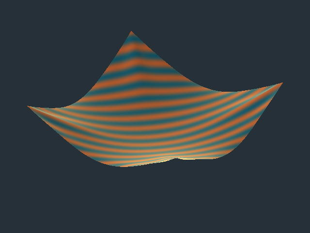
Custom shader · bias stripes and rim sheenThe custom fabric shader mixes copper and teal along diagonal UV bands. A grazing-angle term adds a pale sheen where the normal turns away from the camera. That sheen follows the crest of the cloth independently of the stripe pattern.
Extra credit · Wind pressure
Still air · frame 240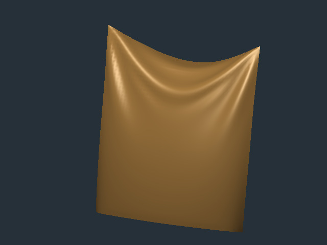
Wind along +z · frame 240
The Wind (+Z) checkbox enables a steady 25 m/s air stream. Each triangle estimates its velocity from its three masses and projects the relative airflow onto its normal. Pressure scales with the square of that normal speed and with triangle area. Its sign determines the loaded face. Each corner receives one third of the force.
The sheet begins nearly edge-on to the flow. As gravity turns it downward, it presents more area to the wind. In the matched pinned2 captures, the free-edge midpoint moves from z = −0.001 in still air to z = 0.265 with wind. The two pinned corners keep their original positions in both runs.
AI assistance
OpenAI Codex generated the simulator and shader implementations, the custom textures, the experiment and capture scripts, and the HTML and PDF write-ups. It built the project, ran the scene comparisons, and checked the outputs.